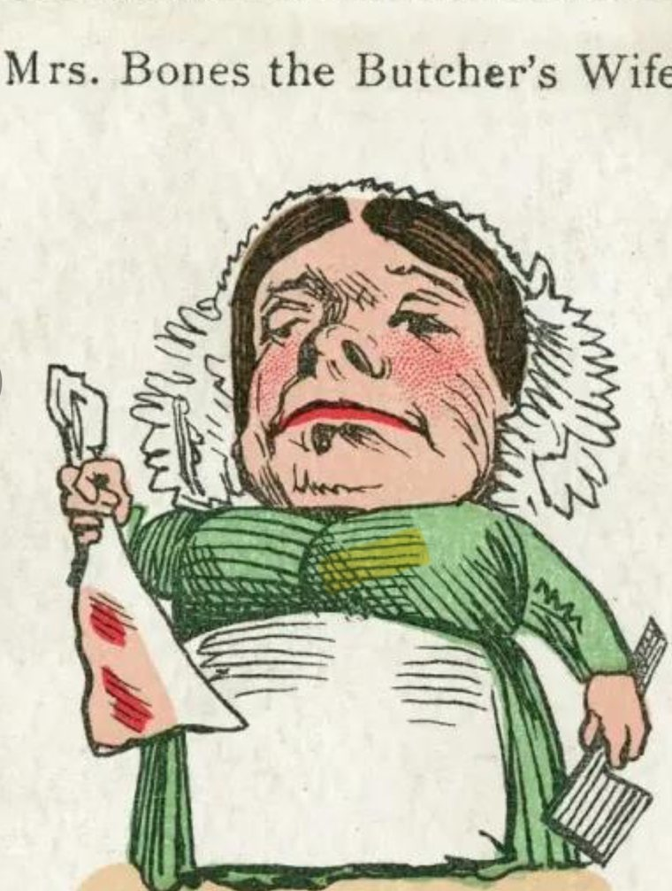
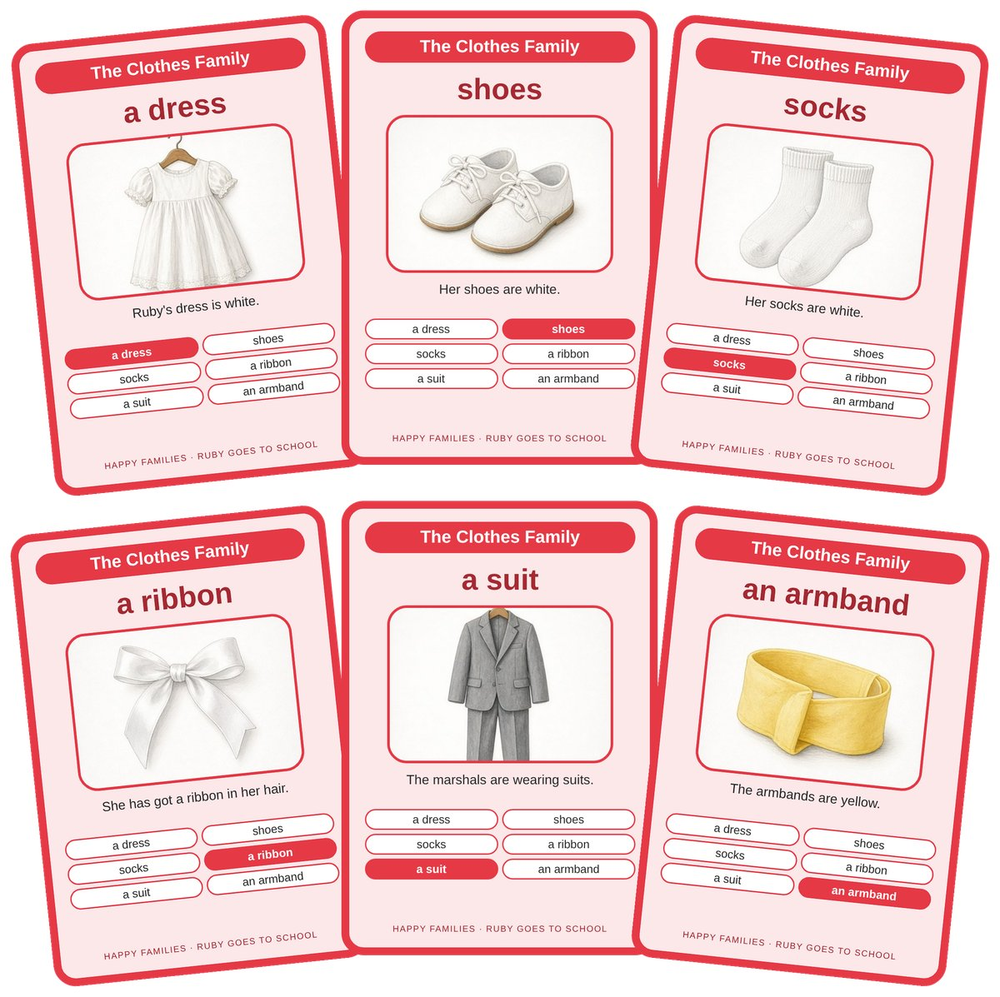
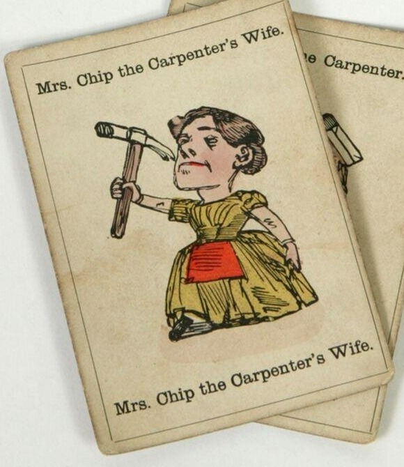
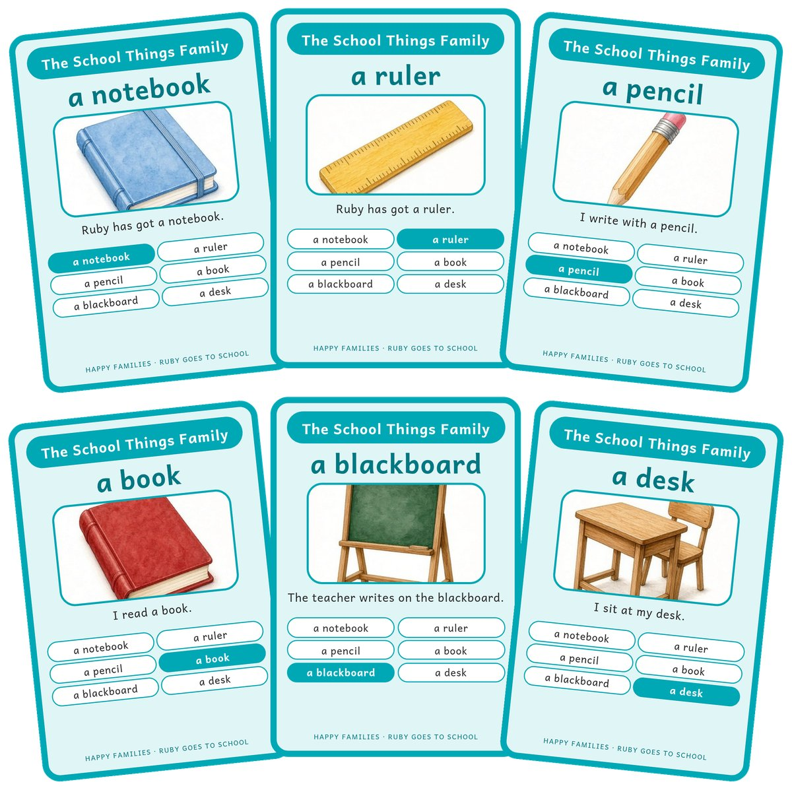

Relax time: Happy Families English · SEGPA · A1 towards A2
Student version Teacher version

Mrs. Bones the Butcher's Wife , card from the game Happy Families , John Jaques & Son, London. Drawings attributed to John Tenniel (1820-1914), not signed. The game was shown at the Great Exhibition of 1851; its first publication is dated 1851 or 1861 depending on the source. Colour lithograph, edition and date of this card unknown. Public domain.Home Lesson 1 Lesson 2 Lesson 3 Lesson 4: Final task Relax time Play Dys version Worksheet Sources Relax time
Relax time: Happy Families
Take a break and have fun with the words of Ruby's story.
Seven families, six cards in each family: 42 cards. Collect a whole family! Use the words of the sequence. Click Listen on each card.
The picture at the top is a real card from the old English game Happy Families. The game was born in Victorian times, in the 1850s. The pictures on our cards are drawings made for this game.
Play at the board
Play on the interactive board. No need to cut the cards. Draw a card, turn it, and put it in its family.
Play Happy Families
Collect the 6 cards of one family!

The Clothes family: a dress, shoes, socks, a ribbon, a suit, an armband.
Game rules
Play in groups of three or four. Shuffle the 42 cards. Give six cards to each player. Put the other cards in a pile, face down.
Look at your cards. At the bottom of a card, you can see the six cards of the family. The coloured word is the card you have.
On your turn, ask one player for one card of a family you already have. What you say Listen Listen slowly
Ask: Lucas, in the Clothes family, can I have the dress, please?
Yes: Yes, here you are! → Thank you! (play again)
No: No, sorry. Pick a card! (take a card from the pile)
Six cards of a family: I've got the whole family! (put the cards down)
The end. When all the families are on the table, the player with the most families wins.
Golden rule. English only! One sentence in French and you miss your next turn.
Note pour l'enseignante « Plage détente » : un jeu des sept familles en anglais, à proposer comme une pause détendue à la fin d'une séance, ou comme un moment de détente en fin de séquence. Pas de note, pas d'enjeu : les élèves réemploient le vocabulaire en jouant. Impression : imprimez en couleur, sur papier cartonné si possible, découpez le long des pointillés et plastifiez si vous le pouvez, pour que les cartes servent d'une année sur l'autre. Quarante-deux cartes, cinq pages A4, un jeu par groupe de trois ou quatre. Une version dys (police Andika, mots plus grands) est prévue. Différenciation : laisser la liste des sept familles au tableau ; pour un groupe très fragile, commencer avec trois familles seulement (Clothes, Colours, Feelings). Les illustrations des cartes sont des dessins créés pour ce jeu ; le tableau de Rockwell et ses détails restent les seules images des séances. Version tableau : la page Play permet de jouer au tableau numérique, sans découper les cartes. Les élèves piochent, retournent la carte et la rangent dans sa famille d'un toucher. Deux équipes, un compteur de familles complètes. Les cartes à imprimer restent disponibles plus bas. La famille « Past » reprend les verbes de la séance 2 (be → was, go → went…).
Petit glossaire. a family : une famille · a pile : une pioche · to shuffle : mélanger · Pick a card! : pioche une carte !
Fabriquer le jeu Des élèves volontaires viennent entre midi et deux pour découper les cartes et les plastifier, avec la plastifieuse de l'établissement ou celle du professeur.
Matériel. Des ciseaux, un massicot si possible, une plastifieuse et des pochettes de plastification.
Étapes.
Imprimer cards.pdf en couleur, sur papier cartonné si possible. Découper les cartes sur les traits. Plastifier les cartes. Recouper chaque carte en arrondissant les coins. L'étiquette « Fabriqué par ». Elle est imprimée sur la dernière page du PDF, à côté des dernières cartes. Les élèves y écrivent leur nom, puis on la glisse dans la boîte du jeu.
Jeu des sept familles
Relax time : Happy Families
Fabriqué par :
Classe : ……………
Année : ……………
Two versions of the game The cards to print are here if you want a game on the table. To play at the board, with no cutting, go to Play Happy Families .
Relax time: dys version 
Mrs. Chip the Carpenter's Wife , card from the game Happy Families, A New and Diverting Game for Juveniles , John Jaques & Son, London, about 1860 (1855-1864). Hand-coloured lithograph, card 9.2 × 5.7 cm. Designed by John Tenniel (1820-1914), according to the museum. Victoria and Albert Museum, London, MISC.47-1975. Photograph © Victoria and Albert Museum, London.Our character: Mrs. Chip the Carpenter's Wife. The same 42 cards, with the Andika font and bigger words.
Collect the 6 cards of one family!

The School Things family: a notebook, a ruler, a pencil, a book, a blackboard, a desk.
Dys cards (PDF) Classic cards (PDF)
Print from the browser · Dys version of the sequence .
The 42 cards The Clothes Family The Clothes Family
a dress. Ruby's dress is white.
Ruby's dress is white.
Listen a dress shoes socks a ribbon a suit an armband
The Clothes Family
shoes. Her shoes are white.
Her shoes are white.
Listen a dress shoes socks a ribbon a suit an armband
The Clothes Family
socks. Her socks are white.
Her socks are white.
Listen a dress shoes socks a ribbon a suit an armband
The Clothes Family
a ribbon. She has got a ribbon in her hair.
She has got a ribbon in her hair.
Listen a dress shoes socks a ribbon a suit an armband
The Clothes Family
a suit. The marshals are wearing suits.
The marshals are wearing suits.
Listen a dress shoes socks a ribbon a suit an armband
The Clothes Family
an armband. The armbands are yellow.
The armbands are yellow.
Listen a dress shoes socks a ribbon a suit an armband
The Colours Family The Colours Family
white. a white cat
a white cat
Listen white yellow red black blue green
The Colours Family
yellow. a yellow sunflower
a yellow sunflower
Listen white yellow red black blue green
The Colours Family
red. a red tomato
a red tomato
Listen white yellow red black blue green
The Colours Family
black. a black umbrella
a black umbrella
Listen white yellow red black blue green
The Colours Family
blue. a blue book
a blue book
Listen white yellow red black blue green
The Colours Family
green. a green apple
a green apple
Listen white yellow red black blue green
The Feelings Family The Feelings Family
brave. She is brave.
She is brave.
Listen brave scared alone happy sad angry
The Feelings Family
scared. He is scared.
He is scared.
Listen brave scared alone happy sad angry
The Feelings Family
alone. She is alone.
She is alone.
Listen brave scared alone happy sad angry
The Feelings Family
happy. He is happy.
He is happy.
Listen brave scared alone happy sad angry
The Feelings Family
sad. She is sad.
She is sad.
Listen brave scared alone happy sad angry
The Feelings Family
angry. He is angry.
He is angry.
Listen brave scared alone happy sad angry
The People Family The People Family
Ruby. Ruby was six.
Ruby was six.
Listen Ruby her mother Mrs Henry a marshal a painter a reporter
The People Family
her mother. Ruby held her mother's hand.
Ruby held her mother's hand.
Listen Ruby her mother Mrs Henry a marshal a painter a reporter
The People Family
Mrs Henry. Mrs Henry was Ruby's teacher.
Mrs Henry was Ruby's teacher.
Listen Ruby her mother Mrs Henry a marshal a painter a reporter
The People Family
a marshal. Four marshals walked with Ruby.
Four marshals walked with Ruby.
Listen Ruby her mother Mrs Henry a marshal a painter a reporter
The People Family
a painter. Norman Rockwell was a painter.
Norman Rockwell was a painter.
Listen Ruby her mother Mrs Henry a marshal a painter a reporter
The People Family
a reporter. A young reporter asked Ruby questions.
A young reporter asked Ruby questions.
Listen Ruby her mother Mrs Henry a marshal a painter a reporter
The School Things Family The School Things Family
a notebook. Ruby has got a notebook.
Ruby has got a notebook.
Listen a notebook a ruler a pencil a book a blackboard a desk
The School Things Family
a ruler. Ruby has got a ruler.
Ruby has got a ruler.
Listen a notebook a ruler a pencil a book a blackboard a desk
The School Things Family
a pencil. I write with a pencil.
I write with a pencil.
Listen a notebook a ruler a pencil a book a blackboard a desk
The School Things Family
a book. I read a book.
I read a book.
Listen a notebook a ruler a pencil a book a blackboard a desk
The School Things Family
a blackboard. The teacher writes on the blackboard.
The teacher writes on the blackboard.
Listen a notebook a ruler a pencil a book a blackboard a desk
The School Things Family
a desk. I sit at my desk.
I sit at my desk.
Listen a notebook a ruler a pencil a book a blackboard a desk
The Places Family The Places Family
a school. Ruby went to a new school.
Ruby went to a new school.
Listen a school a classroom a playground a street an office a house
The Places Family
a classroom. Ruby was alone in her classroom.
Ruby was alone in her classroom.
Listen a school a classroom a playground a street an office a house
The Places Family
a playground. Ruby could not go to the playground.
Ruby could not go to the playground.
Listen a school a classroom a playground a street an office a house
The Places Family
a street. A lot of people shouted in the street.
A lot of people shouted in the street.
Listen a school a classroom a playground a street an office a house
The Places Family
an office. On the first day, Ruby sat in the office.
On the first day, Ruby sat in the office.
Listen a school a classroom a playground a street an office a house
The Places Family
a house. I live in a house.
I live in a house.
Listen a school a classroom a playground a street an office a house
The Past Family The Past Family
was. Ruby was six.
be → was: Ruby was six.
Listen was went walked drove held sat
The Past Family
went. She went to a new school.
go → went: She went to a new school.
Listen was went walked drove held sat
The Past Family
walked. She walked into the school.
walk → walked: She walked into the school.
Listen was went walked drove held sat
The Past Family
drove. The marshals drove Ruby to school.
drive → drove: The marshals drove Ruby to school.
Listen was went walked drove held sat
The Past Family
held. She held her mother's hand.
hold → held: She held her mother's hand.
Listen was went walked drove held sat
The Past Family
sat. She sat in the office all day.
sit → sat: She sat in the office all day.
Listen was went walked drove held sat
Homework Learn the words of one family. Say them to someone at home. Draw a new card for one family and write the word.